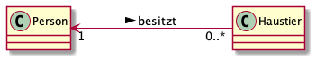

1. 2021-09-28 (Dienstag)
Prof. Aberger anwesend
-
Linux shell commands
32 echo $PATH
33 ll
34 echo Hello World
35 echo $USER
36 set
37 env
38 set | more
39 env | grep BASH
40 env | grep HOSTNAME
41 env
42 set | grep BASH
43 set | grep HELLO
44 set | grep SURFACE
45 SURFACE=TOMTAILOR
46 set | grep SURFACE
47 ll
48 where java
49 which java
50 ls -l /usr/bin
51 ls -l /etc/alternatives
52 ls -l /etc/alternatives/java
53 sudo update-alternatives --config java
54 sudo apt install openjdk-11-jdk
55 sudo update-alternatives --config java
56 java -version
57 sudo update-alternatives --config java
58 java -version
59 which java
60 docker version2. 2021-10-05 (Donnerstag)
(1 EH entfallen)
-
Datenmodellierung: Bsp: Motel
3. 2021-10-05 (Dienstag)
Prof. Aberger anwesend
3.1. Linux-Shell commands
3.2. Docker Einführung
68 docker version
69 sudo docker version
70 sudo docker run hello-world
71 sudo groupadd docker
72 sudo usermod -aG docker $USER
73 docker run hello-world
76 newgrp docker
77 docker run hello-world
78 docker run docker/whalesay Hallo 3BHITM4. 2021-10-07, Do.
-
Projektarten
5. 2021-10-14, Do.
-
Projektantrag (project proposal)
-
Vorstudie
-
Machbarkeitsstudie
-
Projektauftrag (project order)
5.1. Projektziele
-
Kann durch Qualität erweitert werden.
6. 2021-10-19
6.1. Prof. Aberger: gh-actions
7. 2021-10-21
-
Linuxe repariert
-
abgegebene Projektanträge besprochen
8. 2021-11-09 (Prof. Aberger)
8.1. Build-Tools: maven
Source: .java → .class → .jar (gezipt)
java -jar MyClass
8.1.1. Was ist ein tar-Archiv
-
Was ist ein .tar.gz
-
tape archive (kommt von den Bandlaufwerken)
-
ist nicht komprimiert (nur Verzeichnisstruktur)
-
mit gzip wird komprimiert
-
tar -xzf xxx.tar.gz
8.1.2. WSL2
-
öffnen des Explorers
-
in Leiste
//wsl$eingeben
oder
-
Windows-Terminal downloaden vom Microsoft Store
-
installieren
-
öffnen
-
dann einfach explorer eingeben
8.1.3. Installation von maven
-
downloaden https://maven.apache.org/download.cgi (entweder .tar.gz oder .zip)
-
in opt-Verzeichnis kopieren
sudo mv /<username>/Download/apache-maven-3.8.3-bin.tar.gz /opt
sudo tar -xzf apache-maven-3.8.3-bin.tar.gz
mavenmv apache-maven-3.8.3 maven
cat maven-env.sh ./maven-env.sh echo $MAVEN_HOME source ./maven-env.sh echo $MAVEN_HOME cd /opt echo $MAVEN_HOME . ./maven-env.sh echo $MAVEN_HOME cd /opt . maven-env.sh . ./maven-env.sh echo $MAVEN_HOME env echo $MAVEN_HOME . ./maven-env.sh echo $PATH nano maven-env.sh . ./maven-env.sh echo $PATH mvn -version
#aufrufen mit: source maven-env.sh export MAVEN_HOME=/opt/maven export PATH=$MAVEN_HOME/bin:$PATH
8.2. Erstellen eines Projekts mit maven
8.2.1. maven - Verzeichnisstruktur
mvn clean package
9. 2021-11-11
9.1. Reverse Engineering
9.2. Projektthemen
| Projekt | Team |
|---|---|
Diagramm-Generator |
Eder Moritz, Al Sabagh A., Angerer Mona |
Uno-Kartenspiel |
Spindler Thomas, Reiter Lydia, Just Elias, Thaller David, Lautischer |
Kino Reservierung |
Schatzberger Oliver, Klose Peter, Lummerstorfer Lukas, Hager Sebastian |
Versteigerungs-programm |
Jaklitsch Julian, Scharrer Raphael, Goldmann Pascal, Mihaescu Teofan |
Fragebogen-Programm |
Weinhäupl, (Knoll), (Horner), (Brunner) |
10. 2021-11-16 Maven Fortsetzung
10.1. Multimodule
-
Die Packages im Java-Code werden beim compilieren in einer Verzeichnisstruktur abgebildet
10.2. Semantische Versionierung
-
z.B 5.3.2
-
5 → Major-Version
-
3 → Minor-Version
-
2 → Patch
-
Auf Grundlage einer Versionsnummer von MAJOR.MINOR.PATCH werden die einzelnen Elemente folgendermaßen erhöht:
-
MAJOR wird erhöht, wenn API-inkompatible Änderungen veröffentlicht werden,
-
MINOR wird erhöht, wenn neue Funktionalitäten, welche kompatibel zur bisherigen API sind, veröffentlicht werden, und
-
PATCH wird erhöht, wenn die Änderungen ausschließlich API-kompatible Bugfixes umfassen.
Außerdem sind Bezeichner für Vorveröffentlichungen und Build-Metadaten als Erweiterungen zum MAJOR.MINOR.PATCH Format verfügbar.
10.3. XML
-
Extensible Markup Language
-
vergleichbar mit HTML
-
es gibt Anfangs- und Ende-Tags
-
allerdings kann ich meine eigenen Tags verwenden
-
-
Mit Parsern (Syntaxanalysatoren) kann man XML-Files gut lesen
10.4. pom.xml
-
ist deklarativ (nicht imparativ)
-
Das Projektergebnis wird beschrieben und nicht der Weg dorthin.
11. 2021-11-18
12. Projektauftrag kontrolliert
13. UML Klassediagramm
13.1. Multiplizität
-
Es gibt 2 Arten:
-
Multiplizität i.S.v
-
Eine Klasse kann 0 Instanzen haben → Utility-Klasse
-
Eine Klasse kann ein Objekt haben → Singleton
-
Eine Klasse kann mehrere Objekte instanzieren
-
-
Multiplizität i.S.v
-
einer Kardinalität bei Datenbanken

-
-
14. Notationen
| Notation | Beispiel |
|---|---|
PascalCase |
NetworkController |
CamelCase |
networkController |
SnakeCase |
network_controller |
KebabCase |
network-controller |
15. 2021-12-07
16. 2021-12-09 (Donnerstag)
16.1. UML-Klassendiagramm (Testverbesserung)
Skipper(Vorname, Nachname, ...) Segler(...)
| Bei Generalisierung noch complete / incomplete und disjoint/overlapping besprechen |
16.2. Buch Kapitel 2: Projektbegründung wiederholt
16.3. Buch Kapitel 3: Projektorganisation fertig
17. 2021-12-16
17.1. Was ist Asciidoctor?
17.1.1. Problemstellung
-
Dokumentationen für Software Projekte werden oft in binären Formaten wie MS-Word, LibreOffice usw erstellt.
-
Problem dabei ist, dass die Versionierung solcher Dokumente nur eingeschränkt möglich ist.
-
Besser wäre:
-
wenn sämtliche Dokumentation als Text vorliegt
-
auch sollte die Dokumentation von Softwaresystemen direkt aus dem Code generiert werden
-
17.1.2. Lösung
-
Verwendet man solche Auszeichnungssprachen wie Markdown, plantuml und Asciidoctor / Asciidoc so spricht man von "doc-as-code"
-
Die Dokumentation wird nicht mit eigenen Werkzeugen (Textverarbeitung, Zeichenprogramm usw. erstellt), sonder in der IDE, in der auch die Programme erstellt werden
-
17.1.3. Umsetzung
Markdown
-
Für markdown gibt es eigene Tools zb MacDown für MacOS, Notion als Browser-Plugin, bzw Plugins für sämtliche IDEs zB VSC, intellij, usw
-
markdown wird in github und in wikis wie zB der wikipedia verwendet
-
Nachteile:
-
beschränkte Möglichkeiten → daher ist es schwieriger umfangreiche Dokumente zu erstellen
-
-
Vorteile:
-
beschränkte Möglichkeiten → daher nicht so schwer zu lernen
-
Asciidoctor
-
vice versa wie Markdown (größerer Funktionsumfang)
-
Quellen zum nachsehen / lernen
17.1.4. Deployment
-
Asciidoctor kann local installiert werden (Das wird nicht empfohlen)
-
Besser mit Docker
-
Für lokales Arbeiten, das IDE-Plugin verwenden zB für intellij
-
für das Deployment verwendet man
-
entweder Docker
-
oder github-actions
-
-
18. 2021-12-21
18.1. Übung: Branching, Merging
368 pwd 369 cd 370 ls .ssh 371 ls -l 372 ls -l .ssh 373 gedit .ssh/id_rsa.pub 374 cd 3bhitm-labs-eder/ 375 git status 376 cd .. 377 rm -rf 3bhitm-labs-eder/ 378 ll 379 mkdir work 380 cd work/ 381 git clone git@github.com:EderMoritz/3bhitm-labs-eder.git 382 cd 3bhitm-labs-eder/ 383 ld 384 ls 385 gedit README.md 386 git status 387 git add README.md 388 git status 389 git commit -m "test merge" 390 git status 391 git push 392 git pull 393 git config pull.rebase false 394 gedit README.md 395 git add . 396 git commit -m "update README" 397 git push
775 cd 3bhitm-labs-eder/ 776 gedit README.md 777 git pull 778 gedit README.md 779 git add . 780 git commit -m "change read.me" 781 git push 782 cd .. 783 rm 3bhitm-labs-eder/ 784 ll 785 git clone git@github.com:EderMoritz/3bhitm-labs-eder.git 786 cd 3bhitm-labs-eder/ 787 ll 788 nano README.md 789 git add . 790 git commit -m "changed README.md" 791 git push 792 history 793 git add . 795 git commit -m "updated by Lydia" 796 git push
18.2. Github Keygen (Mitschrift Thomas Spindler)
mithilfe von SSH keys:
ssh-keygen -t rsa
18.3. GIT (Mitschrift Thomas Spindler)
neuen Ordner erstellen und erneut Klonen
mkdir work cd work git clone <LINK>
File im Directory abändern:
gedit readme.md <ändern des files> git commit -m "test merge" git push
Andere Person nun auf dem repo:
git status
man bemerkt, dass das Repo nicht auf dem aktuellen Stand ist
updaten des Repos:
git pull
mit diesen Command laded man alle Abänderungen in den Dateien des remote repos herunter.
Person 2 editiert dann die Datei, commited und pusht
echo "Person 2 edit" >> readme.md git commit -m "update readme.md - Person 2" git push
Person 1 ladet nun wieder die Abänderungen herunter
git pull
nun ändern beide Personen die Datei readme.md ab.
beide Personen:
git add git commit -m "merge test2" git push
bei einer Person wird der push rejected, da das Remote
repo Änderungen beinhaltet, die noch nicht existieren.
Daher braucht man git stash:
git stash
aufgrund des Commites kann stash nicht ausgeführt werden.
| vor dem commit IMMER einen pull machen |
Öffnen des Repos in IntelliJ für einen Merge Mergeconflikte sind auf der Commandzeile eher schwer zu machen, daher sollten wir dafür einen Editor verwenden (IntelliJ, VSCode)
18.4. Git stash (Mitschrift Thomas Spindler)
2 Leute klonen ein Git Repository und ändern in einem beliebigen File eine bestimmte Zeile ab.
Wir haben bereits gelernt, dass man die Abänderungen mergen kann, allerdings werden wir uns in dieser Übung stash verwenden.
Eine der Personen push dann die Abänderungen auf das aktuelle Repository:
git commit -m "<MESSAGE>" git push
Hiermit haben wir einen Konflikt erstellt.
Die andere Person "versteckt" nun ihre Abänderungen, mithilfe von git stash, und pullt dann die Abänderungen vom remote Repo.
git stash git pull
Danach holen wir die Abänderungen wieder zurück:
git stash pop
Dann können wir ohne weitere Probleme commiten und pushen.
| Git pulls sollten regelmäßig und oft gemacht werden, um größere Konflikt zu verhindern. Dies kann auch in IntelliJ unter den folgenden Optionen automatisiert werden: |
19. PlantUML (Mitschrift Thomas Spindler)
PlantUML Diagramme sind, wenn man das Template verwendet, im plantuml Ordner.
19.1. Umgebungen
19.1.1. PlantUML in Asciidoc
Da wir unsere Mitschriften in Asciidoc führen, zeigen wir dies gleich am Anfang.
Einbindung von PlantUML in Asciidoc:
[plantuml, <NAME>] ---- @startuml ... @enduml ----
Hierbei gilt zu beachten, dass der <NAME> immer unterschiedlich sein muss. Wenn ein name doppelt verwendet wird, wird nur eines der zwei Diagramme an beiden Stellen angezeigt.
Um ein externes File einzufügen, kann folgende Syntax verwendet werden:
[plantuml, <NAME>] ---- include::plantuml/plantuml-example-1.puml[] ----
19.1.2. PlantUML in IntelliJ
Das Plugin "PlantUML initgration" herunterladen und installieren. Anschließend das IDE neu starten
19.2. Grundlagen
jedes PlantUML file hat ein Start und ein Ende:
@startuml start ... stop @enduml
Nachschlagwerk: PlantUML Dokumentation
19.2.1. Sequenzen
Eine Sequenz ist ein Teil unseres Programmes. Mithilfe von PlantUML können wird diese schnell und genau darstellen.
Beispiel für eine Sequenz in PlantUML:
@startuml :Hello World; @enduml
wird zu:
Ebenfalls kann man einer Sequenz einen Titel und eine Beschreibung geben. Hierbei ist darauf zu achten, dass im Titel keine Leerzeichen vorhanden sein dürfen.
@startuml HelloWorld:This is a description @enduml
19.2.2. If-Statements
If Statements in PlantUML darstellen:
@startuml if(Paket-Gewicht) is (>10kg) then :Sende mit LKW; else :Sende mit PKW; endif @enduml
19.2.3. Start und Stop
Wie bereits im Beispiel oben eingebaut, hat ein Programmablauf immer einen Anfang und ein Ende. Diese können mit den Keyworten "start" und "stop" dargestellt werden.
@startuml start :HelloWorld stop @enduml
19.3. Beispiel aus dem Unterricht
Mithilfe diesen Beispieles wurde uns PlantUML erklärt: